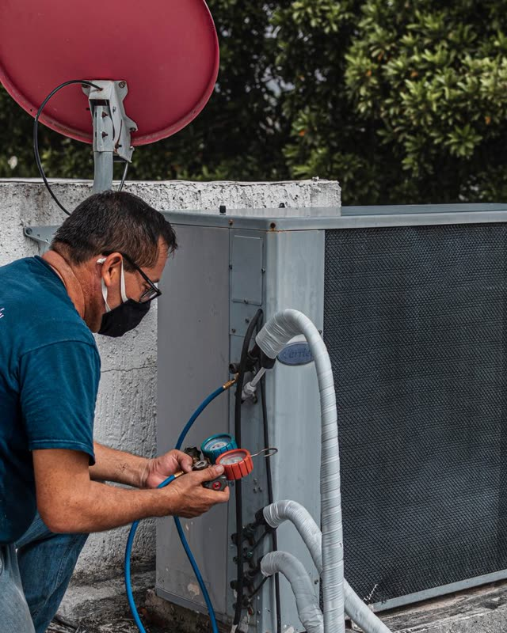
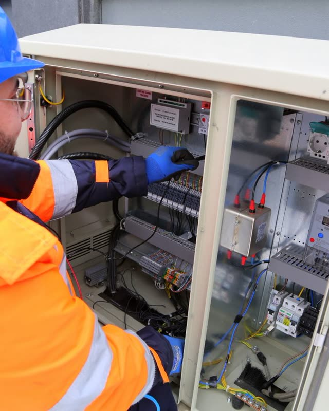
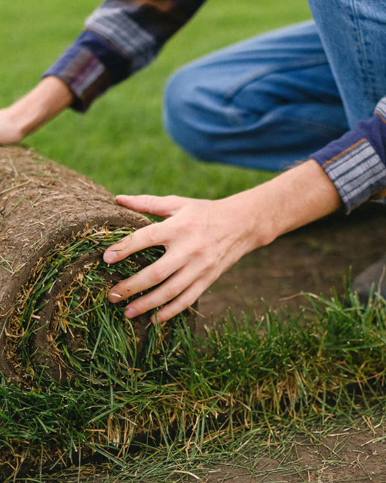

Layered intelligence for the service industry.
We connect the tools you already run and automate the busywork around them.
Built for the trades that keep homes running
Custom tools for scheduling, dispatch, invoicing and customer follow-up, or anything else your office needs.

HVAC
Electrical- Plumbing
- Lawn care

Landscaping
Case study
From a paper calendar and printed routes to online, semi-automated scheduling, dispatch and routing.
One build, as an example: a family-owned water-feature contractor with 250-odd accounts, built around how they already work. Billing, reports or something custom get the same treatment.
See the full build-
BeforeA hand-copied wall calendar
NowA recurring schedule built automatically from the notes they already keep
-
BeforePrinted route sheets
NowRoutes optimized around geography and morning traffic
-
BeforeThe crew working off a clipboard
NowThe day's stops, gate codes, and warnings on each crew phone
The owner approves every route before it goes out, and QuickBooks stays the books.
Works with the tools you already use
Don't see yours? If it has an export or an API, we can almost certainly connect it.
Who you're working with
Thomas Ankenbrandt
Co-FounderI'm an electrical engineer from Cal Poly SLO, but most of what I know has come from building software for real teams. I've built custom tools for nonprofits and AI-driven automations in corporate and industry settings.
That work convinced me that software which once took an engineering team months can now be built in weeks, and that changes what is worth building for a business like yours. That is what led us to start Somerset Systems.
I play guitar and basketball, and I like to travel.
Victor Josifovski
Co-FounderI come to Somerset Systems from a non-technical background, having studied political science at UC San Diego and worked across several legal organizations as an aspiring lawyer.
Working with law firms and nonprofits has given me an interest in how different organizations structure their work and the systems that keep them running day to day. What drew me to Somerset is the opportunity to understand those systems and use a new generation of software tools to make them work better.
I like to read and train jiu-jitsu.
Straight answers
Most of those tools only show you one system at a time, and each one defines things its own way. What QuickBooks counts as revenue, what your field software counts as a completed job, and what your CRM counts as an active customer rarely line up, so the numbers never quite agree.
We build one dashboard around your operation specifically: exactly the information you want to see, and none of the clutter you don't. Underneath it, we establish trusted definitions for the figures that matter to you, a single agreed source of truth that every system is measured against, so your software finally tells one consistent story instead of three conflicting ones.
On top of that, we automate the work itself, not just the handoffs between tools. Documents draft themselves from live data, follow-ups and reminders go out on their own, owner reports are written for you each morning, and routine coordination happens in the background. The result is one view you can trust, and far less manual work to keep it accurate.
Yes. We connect through the official, secure integrations each tool already provides, the same ones your accountant or other trusted apps use. Where the work only requires reading your data, we use read-only access. We never ask for your passwords, and we never sell or share your data. If you handle sensitive financial or customer records, we document exactly what is accessed and put it in writing in the agreement.
Nothing goes out to a client automatically. The system drafts documents from your real data, someone on your team reviews them, and they only send once you approve. The AI handles the writing, while your people keep the final judgment. We also tune it on your own templates and language, so the drafts read like your business rather than a generic chatbot.
Not a long one, and you pick the shape. Either a setup fee with a six-month minimum, or no setup fee at all with twelve. The build happens up front, so the minimum is what covers it. After that you are month to month and can cancel if it stops earning its keep. No auto-renewing years, no setup tricks. We would rather keep your business because the system works than because you are locked in.
Pricing is based on the size of your operation and the scope of the build. The strategy call is free, with no commitment on either side, and we give you exact numbers before any work begins. Nothing is priced before we have seen how you actually run.
Everything it takes to keep the system running. That includes updates, integration maintenance, small changes as your business evolves, and direct access to us when something needs adjusting.
Ready to see what's possible?
A 30-minute conversation about your operation, with no pitch deck and no obligation on either side.
Book a Demo